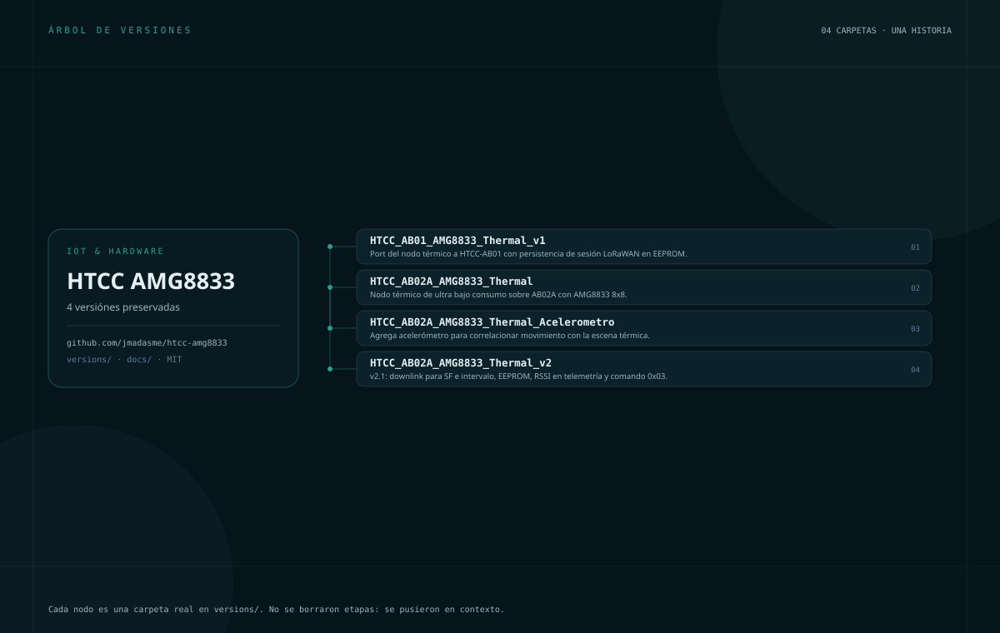

HTCC_AB01_AMG8833_Thermal_v1
4 archivosPort del nodo térmico a HTCC-AB01 con persistencia de sesión LoRaWAN en EEPROM.
Ver carpetaCuatro nodos térmicos HTCC con AMG8833: de la primera prueba a la persistencia de sesión y el control por downlink.

Familia de nodos LoRaWAN con sensor térmico AMG8833 de 8x8. La evolución va del port a AB01 con EEPROM hasta el control remoto de spreading factor e intervalo, pasando por una variante con acelerómetro.
Un nodo térmico remoto no se puede reconfigurar sin ir a buscarlo, y cada join consume batería y tiempo de aire.
Persistir la sesión LoRaWAN, exponer el intervalo y el SF por downlink y devolver RSSI para diagnosticar el enlace sin acceso físico.
Cada carpeta conserva una etapa del proyecto. No se borraron las anteriores: se pusieron en contexto.
Port del nodo térmico a HTCC-AB01 con persistencia de sesión LoRaWAN en EEPROM.
Ver carpetaNodo térmico de ultra bajo consumo sobre AB02A con AMG8833 8x8.
Ver carpetaAgrega acelerómetro para correlacionar movimiento con la escena térmica.
Ver carpetav2.1: downlink para SF e intervalo, EEPROM, RSSI en telemetría y comando 0x03.
Ver carpetahtcc-amg8833 documenta cuatro versiones de un nodo térmico de bajo consumo basado en la placa Heltec HTCC-AB02A y el sensor AMG8833 de 8x8 píxeles. El firmware lee la matriz por I2C, calcula mínimo, máximo y promedio, añade termistor y tensión de batería, y publica todo por LoRaWAN con deep sleep real y el sensor apagado entre mediciones.
Está dirigido a quien necesita vigilar temperatura sin acceso físico al nodo ni cambiar el firmware cada vez. Su aporte es la reconfiguración remota: por downlink se ajustan el factor de dispersión y el intervalo, se guardan en EEPROM, y la telemetría devuelve RSSI y configuración aplicada. También expone con claridad el costo de cada decisión en payload, aire y batería.
El README original de la versión de referencia, completo.
Nodo LoRaWAN de clase A construido sobre una Heltec CubeCell HTCC-AB02A ("CubeCell 1/2AA Node") que integra una termocámara Panasonic AMG8833 (8×8) por I2C y envía la imagen térmica al gateway por radio LoRa (SX1262).
La v2.0 añade sobre la v1 (que ya funciona en campo) la capacidad de control remoto por downlink: desde el Network Server se puede cambiar el Spreading Factor (SF) y el ciclo de reporte (intervalo entre envíos) sin tocar el firmware. Ambos parámetros se persisten en EEPROM y sobreviven a reset y a corte de alimentación.
La v2.1 añade telemetría de radio a todo reporte: cada uplink incluye ahora
el SF actual, el intervalo de reporte (min) y el RSSI del último downlink
recibido (telemetría de enlace). Además incorpora un tercer comando downlink
0x03 0x00 que solicita al nodo reportar el RSSI en el siguiente uplink.
| Placa | Heltec CubeCell HTCC-AB02A (ASR6502 + SX1262) |
| Sensor | Termocámara AMG8833 (8×8, 64 píxeles) + termistor interno |
| Stack | RadioLib 7.7.1 |
| Región | AU915 — sub-banda 2 |
| Activación | OTAA · Clase A · Puerto 1 (uplink y downlink) · sin confirmación |
| Gateway / NS | Milesight UG56 (Network Server embebido) |
| Novedad v2 | Control por downlink de SF e intervalo + payload adaptativo |
| Novedad v2.1 | Telemetría SF + intervalo + RSSI en todo reporte + comando 0x03 (consulta RSSI) |
| Parámetro | Valor |
|---|---|
| Placa | Heltec CubeCell HTCC-AB02A ("CubeCell 1/2AA Node") |
| MCU | ASR6502 (System-in-Package) — ARM Cortex-M0+ |
| Radio | SX1262 (integrada en el SiP, no es un módulo externo) |
| RAM | 16 KB (SRAM retenida durante deep sleep) |
| Flash | 128 KB (incluye EEPROM emulada para persistencia) |
| Core Arduino | CubeCell 1.4.0 |
| FQBN | CubeCell:CubeCell:CubeCell_AB02A |
| Stack LoRaWAN | RadioLib 7.7.1 (~/Arduino/libraries/RadioLib) |
| Interfaz PC | CP210x USB-UART → /dev/ttyUSB0 @ 115200 baud |
| Alimentación | Pila de litio Li-SOCl₂ 14250 (1/2AA, 3.6 V nominal) |
Consumo de memoria estimado (auditoría estática): RAM ~6 KB / 16 KB (~38 %), Flash ~100 KB / 128 KB (~78 %).
El nodo funciona como un termógrafo de baja potencia que reporta periódicamente a un gateway LoRaWAN:
LinkADRReq/LinkADRAns.handleDownlink) con una whitelist
estricta de comandos.lowPowerHandler()) durante el intervalo
configurado (por defecto 1 minuto) y despierta por timer.El payload completo de 138 bytes (64 píxeles individuales + termistor +
batería + 5 B de telemetría) solo cabe en SF7/DR5 (maxPayload ≈ 238 B). En
SF8 (DR4) y SF9 (DR3) el maxPayload baja a ≈125 B y el payload completo no
cabe (error PACKET_TOO_LONG). Por eso:
| SF actual | Formato enviado | Tamaño |
|---|---|---|
| SF7 (DR5) | Payload completo (64 píxeles + termistor + batería + telemetría) | 138 B |
| SF8 / SF9 (DR4 / DR3) | Payload compacto (MIN/MAX/PROMEDIO + termistor + batería + telemetría) | 16 B |
Al subir el SF se pierde la resolución espacial de los 64 píxeles individuales: en su lugar se envía el mínimo, máximo y promedio de la imagen, que es la forma segura de permitir SF altos sin romper el enlace.
Desde la v2.1, ambos formatos incluyen al final tres campos de telemetría que permiten diagnosticar el enlace de radio desde el Network Server sin tocar el firmware:
| Campo | Longitud | Significado |
|---|---|---|
| SF actual | 1 B | Spreading Factor en uso (7..9) |
| Intervalo | 2 B (uint16 BE) | Ciclo de reporte en minutos (1..1440) |
| RSSI | 2 B (int16 BE) | Intensidad del último downlink recibido (dBm, negativo); 0x8000 = "no disponible" (aún no hubo downlink) |
El RSSI se obtiene con radio.getRSSI() en el momento de recibir un downlink
(valor en dBm del último downlink). Si el nodo aún no ha recibido ningún downlink,
el campo vale 0x8000 (−32768). Consulta la sección 8. Formato de payload
para el detalle byte a byte y 7. Guía de comandos downlink
para el comando 0x03 de consulta de RSSI.
/dev/ttyUSB0 @ 115200).No es necesario reprogramar nada. Desde el Network Server del gateway Milesight
(usando el Payload Codec con la función Encode) se envían comandos JSON que
se convierten en bytes downlink:
{ "set_sf": 8 } → cambia el SF a 8.{ "interval_min": 5 } → cambia el ciclo a 5 minutos.{ "query_rssi": true } → solicita el RSSI del último downlink (v2.1).Consulta la Guía de comandos downlink para la tabla completa de ejemplos hexadecimales.
En el monitor serial verás líneas como:
[CFG] EEPROM: sf=7 interval=1 min
[DL] SF cambiado a 8 (DR4, maxPayload=125 B)
[DL] Intervalo cambiado a 5 min
[DL] Consulta RSSI recibida: RSSI=-72 dBm (se reportará en el próximo uplink)
Estas líneas confirman que un comando downlink fue recibido, aplicado y persistido.
En la v2.1, cada uplink decodificado en el NS incluye además sf, interval_min
y rssi_dBm (o null si no hubo downlink previo).
| Función | Pin físico (GPIO) | Pin CubeCell |
|---|---|---|
| NSS (SPI chip-select) | 35 | P4_3 |
| DIO1 (IRQ de radio) | 38 | P4_6 |
| RST (reset) | 47 | P5_7 |
| BUSY | 39 | P4_7 |
En el firmware:
Module mod(35, 38, 47, 39);→ NSS, DIO1, RST, BUSY.
| Función | Pin CubeCell | Notas |
|---|---|---|
| SDA | P0_1 | Línea de datos I2C |
| SCL | P0_0 | Línea de reloj I2C |
| Alimentación conmutada | VEXT (P3_2) | Polaridad INVERTIDA: HIGH = ON, LOW = OFF |
| Función | Pin / Interfaz | Notas |
|---|---|---|
| Dirección I2C AMG8833 | 0x69 (por defecto) |
0x68 si el puente ADDR está soldado |
| USB / UART depuración | CP210x → /dev/ttyUSB0 |
115200 baud |
Heltec CubeCell HTCC-AB02A
(ASR6502 SiP + SX1262 integrada)
+-------------------------------------------------------------+
| |
| [P4_3] NSS ---------------------------- (interno) SX1262 |
| [P4_6] DIO1 ---------------------------- (interno) SX1262 |
| [P5_7] RST ---------------------------- (interno) SX1262 |
| [P4_7] BUSY ---------------------------- (interno) SX1262 |
| |
| [P0_1] SDA -----------------------------------> AMG8833 SDA|
| [P0_0] SCL -----------------------------------> AMG8833 SCL|
| [P3_2] VEXT ----------------------------------> AMG8833 VDD|
| (polaridad INVERTIDA: HIGH=ON/LOW=OFF) |
| |
| [USB CP210x] -----------------------------> /dev/ttyUSB0 |
| (monitor 115200) |
+-------------------------------------------------------------+
|
| GND común (placa <-> sensor)
|
AMG8833 (8x8 Grid-EYE)
+--------------------------+
| VDD <--- VEXT (P3_2) |
| GND <--- GND |
| SDA <--- P0_1 |
| SCL <--- P0_0 |
| ADDR = no soldado -> 0x69 (soldado -> 0x68) |
+--------------------------+
VEXT (P3_2) del CubeCell alimenta el
VDD del AMG8833. La lógica del pin está invertida respecto al pinout
oficial: digitalWrite(VEXT, HIGH) enciende el sensor y LOW lo apaga (0 µA
en reposo). Verificado en campo con escáner I2C.SDA (P0_1) → AMG8833 SDA; SCL (P0_0) → AMG8833 SCL. Ambos
comparten la masa (GND) con la placa.0x69 (puente ADDR sin soldar). Si está
soldado, la dirección pasa a 0x68; el firmware prueba ambas./dev/ttyUSB0 @ 115200.El gateway Milesight UG56 trae un Network Server (NS) embebido. Para registrar el nodo:
decoder.js (ver §6.4).Las credenciales reales viven en credentials.h (archivo no versionado, en
.gitignore). La plantilla pública está en credentials.example.h.
| Campo | Dónde está | Notas |
|---|---|---|
| DevEUI | credentials.h (devEui) |
Identificador público del nodo (64-bit) |
| JoinEUI / AppEUI | credentials.h (joinEui) |
Identificador público de la red/aplicación (64-bit) |
| AppKey | credentials.h (appKey[], 16 bytes) |
CLAVE SECRETA — nunca versionar ni publicar |
| NwkKey | credentials.h (nwkKey[], 16 bytes) |
CLAVE SECRETA — nunca versionar ni publicar |
Importante: RadioLib espera las credenciales en big-endian (orden "over-the-air"). Al copiar
credentials.example.hacredentials.hrespeta ese orden. No publiques ni documentes los valores reales de AppKey/NwkKey.
| Parámetro | Valor |
|---|---|
| Región | AU915 |
| Sub-banda | 2 |
| Gateway | Milesight UG56 (NS embebido) |
| Clase | A |
| Puerto | 1 (uplink y downlink) |
| Confirmación | Unconfirmed |
| ADR | OFF (el nodo llama a node.setADR(false) tras cada join) |
Configura la sub-banda 2 en el gateway/NS para que los canales coincidan con los del nodo. Si el gateway no coincide de sub-banda, el join y los uplinks fallarán silenciosamente.
decoder.js en el editor.Decode(fPort, bytes) → convierte el uplink a JSON legible.
- Encode(fPort, obj) → convierte un JSON de comando en bytes downlink.Compatibilidad: el formato es el de ChirpStack v3 / Milesight: JavaScript ES5 (sin
let/const, sin arrow functions),Decodedevuelve un objeto JSON directo (no{data, errors}) yEncodedevuelve un array de bytes directo. Solo caracteres ASCII.
El nodo procesa downlinks recibidos en FPort 1 con una whitelist estricta. Cualquier comando que no encaje exactamente se ignora y se registra por serial.
| Comando | Bytes | Campo | Rango | Acción |
|---|---|---|---|---|
| Cambiar SF | 0x01 <sf> |
sf (uint8) |
7..9 | Cambia SF (→ DR5..DR3) + persiste en EEPROM |
| Cambiar intervalo | 0x02 <min_hi> <min_lo> |
minutes (uint16 big-endian) |
1..1440 | Cambia ciclo de reporte en minutos + persiste |
| Consultar RSSI | 0x03 0x00 |
(sin parámetros) | — | Solicita reportar el RSSI del último downlink en el próximo uplink |
Encode)El NS usa la función Encode(fPort, obj) del codec. Escribes un JSON y el
codec lo traduce a bytes:
| JSON de entrada | Bytes downlink generados |
|---|---|
{ "set_sf": 7 } |
01 07 |
{ "set_sf": 8 } |
01 08 |
{ "set_sf": 9 } |
01 09 |
{ "interval_min": 1 } |
02 00 01 |
{ "interval_min": 5 } |
02 00 05 |
{ "interval_min": 60 } |
02 00 3C |
{ "interval_min": 255 } |
02 00 FF |
{ "interval_min": 256 } |
02 01 00 |
{ "interval_min": 1440 } |
02 05 A0 |
{ "query_rssi": true } |
03 00 |
{ "set_sf": 7, "interval_min": 60 } |
01 07 02 00 3C |
El comando
query_rssino cambia ninguna configuración: solo pide que el nodo reporte el RSSI del último downlink recibido (que de todas formas ya viaja en cada uplink desde la v2.1). Es útil para forzar una medición puntual del enlace.
Si el NS no usa Encode y envías bytes hex a mano, estos son los payloads:
| Acción | Payload hex | Notas |
|---|---|---|
| SF → 7 | 01 07 |
DR5, permite payload completo 138 B |
| SF → 8 | 01 08 |
DR4, pasa a payload compacto 16 B |
| SF → 9 | 01 09 |
DR3, payload compacto 16 B |
| Intervalo 1 min | 02 00 01 |
Valor por defecto |
| Intervalo 5 min | 02 00 05 |
|
| Intervalo 60 min | 02 00 3C |
|
| Intervalo 1440 min (24 h) | 02 05 A0 |
Máximo permitido |
| Consulta RSSI | 03 00 |
El próximo uplink reporta el RSSI del último downlink |
| SF 7 + intervalo 60 min | 01 07 02 00 3C |
Dos comandos encadenados |
| SF | DR | maxPayload (aprox., vía getMaxPayloadLen()) |
|---|---|---|
| 7 | DR5 | ≈ 238 B → payload completo 138 B |
| 8 | DR4 | ≈ 125 B → payload compacto 16 B |
| 9 | DR3 | ≈ 123 B → payload compacto 16 B |
La región AU915 impone un límite de dwell time de 400 ms por transmisión. Los SF altos (SF10, SF11, SF12) generan time-on-air superior a 400 ms y quedan prohibidos. Si se forzara un SF≥10:
DWELL_TIME_EXCEEDED / PACKET_TOO_LONG.Por eso el firmware restringe el downlink a SF 7..9 (SF_MIN/SF_MAX) y,
como defensa adicional, llama a node.setDwellTime(false) tras cada join y hace
un guard-check de getMaxPayloadLen() antes de persistir.
Tres formatos posibles según el contexto. Endianidad explícita en cada campo.
| Byte(s) | Longitud | Campo | Formato | Endianidad |
|---|---|---|---|---|
| 0 | 1 | Versión/estado | 0x01 OK · 0x81 fallo lectura I2C |
— |
| 1–2 | 2 | Termistor crudo | 12-bit signed (0x0E) | little-endian |
| 3–130 | 128 | 64 píxeles crudos | 12-bit signed (0x80–0xFF) | little-endian (2 B por píxel) |
| 131–132 | 2 | Batería | mV (uint16) | big-endian |
| 133 | 1 | SF actual (v2.1) | 7..9 | — |
| 134–135 | 2 | Intervalo (v2.1) | minutos (uint16) | big-endian |
| 136–137 | 2 | RSSI último downlink (v2.1) | dBm (int16) · 0x8000 = no disponible |
big-endian |
| Byte(s) | Longitud | Campo | Formato | Endianidad |
|---|---|---|---|---|
| 0 | 1 | Versión/estado | 0x11 OK · 0x91 fallo (bit 0x10 = compacto) |
— |
| 1–2 | 2 | Termistor crudo | 12-bit signed | little-endian |
| 3–4 | 2 | Píxel MIN | 12-bit | little-endian |
| 5–6 | 2 | Píxel MAX | 12-bit | little-endian |
| 7–8 | 2 | Píxel PROMEDIO | uint16 = suma/64 | little-endian |
| 9–10 | 2 | Batería | mV (uint16) | big-endian |
| 11 | 1 | Eco SF actual | 7..9 | — |
| 12–13 | 2 | Eco intervalo | minutos (uint16) | big-endian |
| 14–15 | 2 | RSSI último downlink (v2.1) | dBm (int16) · 0x8000 = no disponible |
big-endian |
Nota sobre RSSI (v2.1): el valor es el RSSI del último downlink recibido, leído con
radio.getRSSI()(negativo en dBm). Si el nodo aún no ha recibido ningún downlink, el campo vale0x8000(−32768) y eldecoder.jslo reporta comorssi_dBm: null.
| Byte(s) | Longitud | Campo | Endianidad |
|---|---|---|---|
| 0 | 1 | Versión 0x02 (sonda DR) |
— |
| 1–2 | 2 | Batería mV | big-endian |
| 3 | 1 | SF solicitado | — |
| 4–5 | 2 | Intervalo en minutos | big-endian |
| Registro | Resolución |
|---|---|
| Termistor (0x0E) | T_C = valor12bit × 0.0625 °C |
| Píxeles (0x80–0xFF) | T_C = valor12bit × 0.25 °C |
| Comando | Bytes | Rango | Acción |
|---|---|---|---|
| SF/DR | 0x01 <sf> |
7..9 | setADR(false) + setDatarate(drFromSf(sf)) + persistir |
| Intervalo | 0x02 <hi> <lo> |
1..1440 (uint16 BE) | aplicar y persistir |
| Consulta RSSI | 0x03 0x00 |
— | reportar RSSI del último downlink en el próximo uplink |
drFromSf(): SF12→DR0, SF11→DR1, SF10→DR2, SF9→DR3, SF8→DR4, SF7→DR5.
CubeCell) con soporte del board CubeCell_AB02A.~/Arduino/libraries/RadioLib.credentials.h creado a partir de credentials.example.h.arduino-cli compile --fqbn CubeCell:CubeCell:CubeCell_AB02A .
arduino-cli upload -p /dev/ttyUSB0 --fqbn CubeCell:CubeCell:CubeCell_AB02A .
arduino-cli monitor -p /dev/ttyUSB0 -c baudrate=115200
Ajusta
-p /dev/ttyUSB0al puerto real de tu sistema (ls /dev/ttyUSB*).
[INIT] HTCC-AB02A + AMG8833 nodo v2.1 (RadioLib) — AU915 SB2
[INIT] DevEUI=70B3D56F27CEE98B JoinEUI=24E124C0002ADD01
[CFG] EEPROM: sf=7 interval=1 min
[INIT] Radio OK
[INIT] Node OK
[INIT] scanGuard=200 ms
[JOIN] Iniciando OTAA (AU915 SB2)...
[JOIN] +++ JOINED +++
[DR] setDatarate(5)=0 maxPayload=238 B
[INIT] Ciclo de 1 min (60000 ms). Listo.
[PROBE] uplink sonda port=1 payload=02 0E E0 07 00 01 (6 B)
[DR] tras sonda maxPayload=238 B (requerido 138 B)
[DR] DR confirmada, payload de 138 B habilitado
[AMG] Wire.begin=OK
[AMG] init OK addr=0x69
[AMG] OK therm=0x0A1B pixels[0]=0x0120
[BATT] 3580 mV
[UPLINK] port=1 len=138 payload=01 1B 0A 20 01 ... 07 00 01 80 00 (sf=7 max=238 B)
[UPLINK] OK (sin downlink)
[SLEEP] Durmiendo 60000 ms (1 min)...
En este primer reporte el campo RSSI vale
0x8000(80 00, "no disponible") porque todavía no se ha recibido ningún downlink.
[UPLINK] port=1 len=138 payload=01 ... 07 00 01 80 00 (sf=7 max=238 B)
[RX] 2 bytes: 01 08 (RSSI=-68 dBm)
[DL] SF cambiado a 8 (DR4, maxPayload=125 B)
[CFG] EEPROM guardada: sf=8 interval=1 min
[SLEEP] Durmiendo 60000 ms (1 min)...
[AMG] OK therm=0x0A1B pixels[0]=0x0120
[BATT] 3580 mV
[UPLINK] port=1 len=16 payload=11 1B 0A 10 01 E2 03 A5 03 0D FC 08 00 01 FF BC (sf=8 max=125 B)
[UPLINK] OK (sin downlink)
En el compacto, los bytes finales son:
08(SF),00 01(intervalo 1 min) yFF BC(RSSI = −68 dBm, capturado del downlink anterior).
[UPLINK] port=1 len=16 payload=11 ... 08 00 01 FF BC (sf=8 max=125 B)
[RX] 3 bytes: 02 00 05 (RSSI=-70 dBm)
[DL] Intervalo cambiado a 5 min
[CFG] EEPROM guardada: sf=8 interval=5 min
[SLEEP] Durmiendo 300000 ms (5 min)...
[UPLINK] port=1 len=16 payload=11 ... 08 00 05 FF BA (sf=8 max=125 B)
[RX] 2 bytes: 03 00 (RSSI=-70 dBm)
[DL] Consulta RSSI recibida: RSSI=-70 dBm (se reportará en el próximo uplink)
[RX] 2 bytes: 04 FF
[DL] Comando 0x04 desconocido; ignorado
Estos son dos uplinks reales capturados en producción, que muestran la
telemetría v2.1 funcionando. Consulta INTERPRETACION_PAQUETES.md para el
desglose byte a byte de estos mismos paquetes.
Caso A — uplink completo SIN downlink previo (Fcnt 875):
{
"kind": "full",
"version": 1,
"sensor_ok": true,
"sf": 7,
"interval_min": 1,
"rssi_dBm": null, // ← aún no hubo downlink (0x8000)
"battery_mV": 3328,
"battery_V": 3.33,
"thermistor_C": 24.25,
"pixel_min_C": 17.5,
"pixel_max_C": 24.5,
"rssi": -40, // ← RSSI medido por el GATEWAY (siempre presente)
"snr": 13.5
}
El payload hex termina en
... 0D 00 07 00 01 80 00: batería0x0D00(3328 mV), SF07, intervalo00 01(1 min) y RSSI80 00(0x8000→null).
Caso B — uplink completo TRAS el comando 03 00 (Fcnt 878):
{
"kind": "full",
"version": 1,
"sensor_ok": true,
"sf": 7,
"interval_min": 1,
"rssi_dBm": -20, // ← ahora reporta un valor real tras el downlink
"battery_mV": 3328,
"battery_V": 3.33,
"thermistor_C": 22.44,
"pixel_min_C": 15.5,
"pixel_max_C": 20.25,
"rssi": -44,
"snr": 10.0
}
El payload hex termina en
... 0D 00 07 00 01 FF EC: RSSIFF EC=-20dBm (int16 big-endian). Es la señal con la que el nodo recibió el downlink del gateway — un enlace excelente (−20 dBm).
Lectura de la secuencia de eventos (clase A):
Time Type Fcnt Size DR RSSI/SNR Nota
20:03:16 UpUnc 875 138 SF7 BW125 -40/13.5 Uplink (rssi_dBm=null)
20:03:16 DnUnc 1 2 SF7 BW500 -/- ← comando 03 00 (consulta RSSI)
20:06:24 UpUnc 878 138 SF7 BW125 -44/10.0 Uplink (rssi_dBm=-20) ← respuesta
Observa cómo el DnUnc (comando) se entrega justo tras un UpUnc, y el siguiente
uplink ya reporta el rssi_dBm medido. Este es el comportamiento esperado de un
nodo de clase A.
VEXT (P3_2) está
invertido: HIGH = ON, LOW = OFF. No lo conectes con la lógica contraria
o el sensor quedará alimentado permanentemente (agotando la pila).credentials.h. Usa
credentials.example.h como plantilla. El archivo ya está en .gitignore.DevNonce = 0. Asegúrate de que el NS Milesight
acepte DevNonce reutilizado (mismo comportamiento que la v1, verificado).Wire.end() antes de cada Wire.begin(). No elimines esa secuencia.HTCC_AB02A_AMG8833_Thermal_v2/
├── HTCC_AB02A_AMG8833_Thermal_v2.ino ← sketch principal
├── credentials.h ← credenciales reales (NO versionar)
├── credentials.example.h ← plantilla pública
├── decoder.js ← Decode + Encode para el NS
├── INTERPRETACION_PAQUETES.md ← guía de lectura de paquetes (v2.1)
├── Comandos_Downlink_HTCC-AB02A_AMG8833_v2.md ← guía rápida de comandos
├── .gitignore ← excluye credentials.h, PLAN, audit…
├── PLAN.md ← plan técnico (no versionar)
├── AUDIT_REPORT.md ← informe de auditoría (no versionar)
├── README.md ← este documento
└── docs/
├── datasheet.md ← documentación de usuario
└── developer.md ← explicación del código fuente
docs/datasheet.md — guía de usuario, especificaciones técnicas,
configuración del NS y solución de problemas.docs/developer.md — explicación del código fuente, arquitectura, máquina
de estados y guía de extensión.INTERPRETACION_PAQUETES.md — cómo leer e interpretar los paquetes
LoRaWAN del nodo (uplink/downlink), con la explicación de los dos RSSI y
ejemplos reales capturados del gateway.Comandos_Downlink_HTCC-AB02A_AMG8833_v2.md — guía rápida de los comandos
downlink (cambiar SF, ciclo de reporte y consultar RSSI).Las primeras versiones existen para que estos errores no se repitan: cada una dejó una decisión de diseño verificable.
Tras dormir, Wire.begin() no reinicializaba el periférico porque el flag I2C_initVar queda retenido en SRAM. El sensor respondía solo en el primer ciclo después del reset y fallaba en los siguientes. Se corrigió llamando a Wire.end() antes de Wire.begin() en cada lectura, patrón que el proyecto marca como obligatorio.
La variante que sumaba un ADXL335 quedó detenida entre un nodo con dos sensores y dos nodos separados. El GY-61 no estaba cableado y la entrada ADC flotaba, así que los valores leídos no eran reales. No se hicieron más pruebas físicas hasta resolver el diseño.
La primera versión fijaba DR5 y 133 bytes para asegurar un único uplink; con enlace marginal había pérdidas y no podía bajar de SF7. La v2 añadió un payload compacto de 16 bytes para SF8 y SF9, manteniendo el completo solo cuando el data rate lo admite.
Seis criterios con la misma escala en todo el catálogo, para comparar sin marketing.
AB02A para bajo consumo; AB01 si ya tenés esa placa y querés persistencia de sesión.
La matriz 8x8 se comprime; el formato exacto está en el developer de la versión.
Región, claves o cobertura. La telemetría incluye RSSI para distinguir cobertura de configuración.
Sí, el AMG8833 mide temperatura de superficie sin contacto, pero tiene un campo de visión estrecho.
Valida rangos antes de aplicar. Aun así, probalo primero en un nodo de laboratorio.
Usá esta familia como base para htcc amg8833. Está documentada para que puedas entenderla, ejecutarla y continuarla sin adivinar.